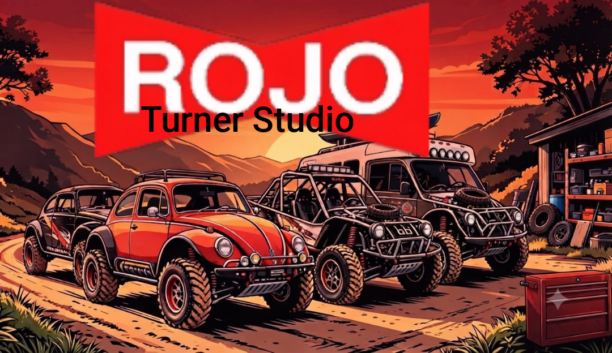

RPM
0
rev/min
PICO 0 · MÍN 0

Leer, guardar y borrar códigos DTC cuando el perfil de la ECU esté conectado.
Pruebas controladas de salidas, relés e inyectores con confirmación de seguridad.
Calibración de TPS, temperatura, presión y entradas analógicas.
Terminal directa con registro de respuestas y bloqueo cuando no hay ECU.
Los cambios de configuración son locales a este navegador.